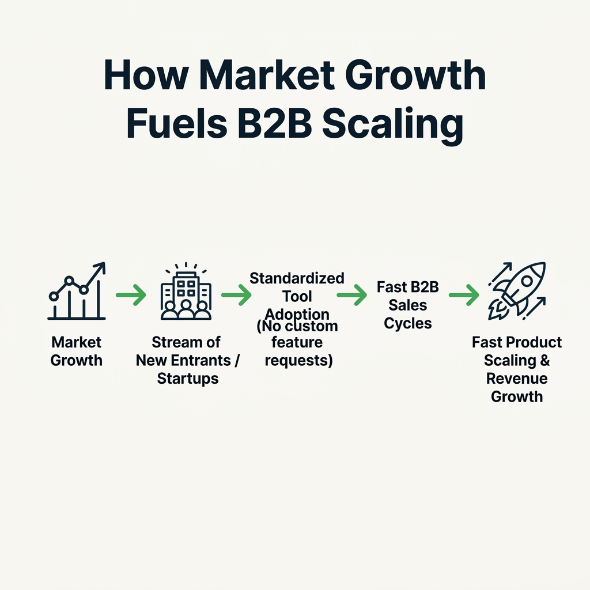

Your goal
Apply Prevalence, Frequency, and Severity lenses to diagnose market growth directions, and target the startup entrant segment to unlock high B2B sales velocity.
Lecture overview
Product managers must build strategies around growing markets. This lecture introduces a framework for diagnosing market growth and explores the distinct buyer behaviors of new entrants vs. established companies.
1. The Three Growth Lenses
To determine if a target opportunity space is growing or shrinking, ask yourself three questions looking five years into the future: Prevalence (Will more people have this problem?), Frequency (Will people have this problem more often?), and Severity (Will the problem hurt more?). If any answer is less, the market is shrinking.
2. Why Target Growing Markets?
Growing B2B markets bring a steady stream of new companies. Selling to new companies is superior to selling to old, established companies. Startups adapt to your tool, have burning needs, take bets, and buy quickly. Enterprises want you to adapt, have optimization problems, are risk-averse, and have long procurement cycles.
Practical B2B Example
Situation
A PM is building a B2B carbon accounting software. They are choosing between two target customer profiles: Established Manufacturing Giants (doing carbon accounting in custom systems for 15 years) or Newly Created Clean-Tech Startups (needing carbon reporting to secure funding immediately).
Decision
The PM targets Clean-Tech Startups (New Entrants) for their initial launch.
Reasoning
Clean-Tech startups have no legacy workflow and will adapt to the tool as-is. They have a burning need for reporting, and they sign up via a self-serve portal in minutes. Industrial giants demand custom enterprise integrations, have long security audits, and view carbon accounting as an optimization problem rather than a launch blocker.
Consequence
By targeting new startups first, the product scales to 50 accounts quickly. These reference customers are then leveraged to win legacy enterprise deals later with a proven, mature product.
Common Misunderstandings
"Old companies have bigger budgets, so we should target them first"
Correction: While enterprises have high purchasing power, the cost-to-serve (custom integrations, long sales cycles, support overhead) often wipes out the margin. Startups buy faster and adapt to your product, allowing you to iterate rapidly on your core features.
"Stable markets are safe because there is no competitive chaos"
Correction: Stable markets have zero new entrants. This means you can only acquire customers by stealing them from established competitors (churn battles). In contrast, growing B2B markets provide a steady stream of new buyers who do not have an existing solution, dramatically lowering your customer acquisition cost (CAC).
Key concepts and definitions
- Prevalence: The total number of people or businesses experiencing a specific problem in a target market.
- Frequency: How often a target user experiences the pain of the problem (e.g., daily vs. once a year).
- Severity: The intensity, financial cost, or operational damage caused by the problem if left unsolved.
- New Entrant Advantage: The strategic speed advantage gained by selling to newly formed buyers who have no legacy tool locks.
Visual summary

Interactive Practice
B2B Buyer Persona Cards
Click the tabs to compare B2B buyer profiles for startups vs. enterprises.
Profile: New Startup Entrant
- Adaptability: High. Will build workflows around your tool's defaults.
- Need: Burning need. Seeking a first-time solution.
- Risk: Open to trying early-stage, unproven tools.
- Procurement: Incredibly fast. Decision made directly by founders.
Profile: Established Enterprise
- Adaptability: Low. Requires software to customize to their workflows.
- Need: Optimization problem. Already has software or workarounds.
- Risk: Risk-averse. Demands case studies, certifications, and compliance.
- Procurement: Multi-month procurement cycles and security evaluations.
Market Growth Diagnoser
Evaluate your target industry scenario using the three growth lenses to see its trajectory.